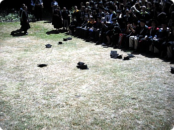
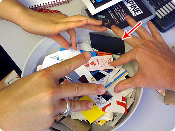

워울~ 졸업식 무사히 마쳤습니다^^
2008년 8월에 어학연수도 안하고
바로 2학년으로 들어가는 용자인증(........)한후에
어찌되었든 무사히 졸업은 하는군요^^;;;;;;
정말 그당시에는 온갖 떡밥에 눈이멀어서
(락밴드라던가락밴드라던가락밴드라던가락밴드라던가;; +장학금;;; ←야;;;;)
덥석 물긴했는데;; 처음도착했을때의 그 패닉이란^^;;;;;;
2년동안 무진장 헤맨기억밖에 안나고
그림을보는 시각이 이렇게 다를수있구나
이 동네는 이런식(?)으로 돌아가는군 이제 촘 알것 같...............
했더니 졸업이래요;;;; 헝헝
매번 프로젝트하믄서 스트레스도 와방이었지만
이래저래 얻은게 많은 2년이었습니다^^
우후후후~앞으로도 히....힘내겠습니다^^***
+그나저나 저날;; 이번주는 목요일까지 내리 선선하다가;;
졸업식 당일인 금요일 더워 죽는줄 알았음;;;@_@
저 더운날씨에 가운에 학사모라니 - 게다가 사이즈 잘못알아서
모자는 나에게 살짝커서 계속 흘러내리고;;;; + 오랜만에 힐에 잘안입는 옷에
악세사리에;;; 오우우우;;;@_@ 무사히 끝나서 다행이에용^^;;;)
++런던서 졸업식보러 와준 C군 감샤
사진찍어주고 가방들어주고 더운데 수고많았음^^;;;;
+++ Final show(new blood)할때 올려놓은 명함을 가져갔는지
www.thereel.net ← 요 사이트에서 멜이 왔다
대충 읽어보니 회원가입+등록 권유하는 홍보멜같은데
잼난건 편지중에
"Whether you know it or not we took your card at the D&AD New Blood event"
라고 써놓고 링크걸어놓은 사진에 진짜 내 명함이 있다는 거 ㅋㅋㅋㅋㅋ

죠기 빨간화살표로 표시해놓은 깜장종이^^;;;
사진사이즈를 줄이니까 잘 안보이는군욤;;
앞은 요래 2가지 디자인 인데

명함 뒷면은 깜장바탕 구석에 notsimple.net 이라고만 써놔서
주소보고 알았다는^^;;;;
엄훠 신기해라
이제 한국집에 가기까지 약 일주일
..........짐싸기 귀찮다;;;;;;;;
게다가 넘 더워;;; 영국왜이래@_@ 더워더워더워 ;ㅂ;